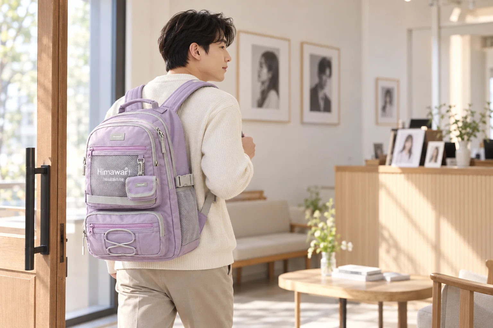

사진관에서는 가방을 내려놓은 뒤 촬영 준비

사진관에서는 짧은 시간 안에 소지품의 위치가 여러 번 바뀝니다. 접수에서 휴대전화를 꺼내고, 거울 앞에서 옷깃을 정리한 다음, 촬영 자리로 옮겨갈 때는 손을 비웁니다. 백팩을 메고 왔다면 이 동작 사이에 가방을 어디에 두었는지 신경이 쓰일 수 있습니다. 촬영 준비물을 많이 챙기기보다 필요한 정보를 먼저 확인하고, 잠시 꺼낸 물건이 한 곳으로 돌아가게 정리하면 움직임이 간단해집니다.
증명사진은 쓰는 곳에 따라 확인할 기준이 다릅니다. 제출처가 요구하는 규격과 사용 목적을 먼저 알아보고, 그 정보를 사진관의 예약 안내와 대조하세요. 배경이나 복장, 파일 수령 방식에서 확인할 것이 있다면 방문 전에 문의할 수 있습니다. 특정 규격을 기억에만 맡겨 준비하기보다 현재 제출처가 안내하는 조건을 남겨두면 접수에서도 무엇을 요청할지 분명해집니다.
예약 정보와 제출 기준이 서로 다른 화면에 있다면 다시 열 수 있는 위치를 미리 확인합니다. 인쇄한 종이를 가져갈 경우에는 평소 서류와 섞이지 않도록 한 묶음으로 두면 됩니다. 신분 확인 등 추가 준비물은 사진관이 요구하는 내용에 따라 챙기세요. 모든 문서를 혹시 필요할지 몰라 가져가기보다 이번 촬영에 실제로 필요한 정보만 골라두면 접수대에서 가방을 크게 펼칠 일이 줄어듭니다.
거울 앞에서 쓸 것만 꺼내기
도착해서는 가방을 둘 수 있는 위치와 귀중품 관리 방법을 확인합니다. 사진관마다 대기 공간과 보관 방식이 다를 수 있으므로 빈 의자나 선반이 보인다고 임의로 사용하기보다 안내를 따릅니다. 백팩을 내려놓기 전 여밈이 닫혀 있는지 보고, 손에 꺼낸 휴대전화나 지갑을 별도 위치에 두었다면 어디인지 알아두세요. 작은 물건을 여러 곳에 나누어 놓으면 촬영을 마친 뒤 각각 회수해야 합니다.
거울 앞에서는 실제로 손질에 사용할 소품만 꺼냅니다. 빗이나 필요한 작은 물건을 여러 개 가져왔더라도 모두 펼쳐둘 필요는 없습니다. 사용한 물건은 한 파우치로 돌려놓고 촬영 자리에는 손을 비운 채 이동할 수 있게 준비합니다. 개인 소품이 사진관의 도구와 비슷하게 생겼다면 섞이지 않을 위치에 두세요. 촬영 직전에 다시 찾을 물건이 없도록 가방을 내려놓는 순간부터 임시 자리를 정하는 방식입니다.
백팩 끈이 닿았던 옷의 어깨와 옷깃을 확인하는 것도 촬영 준비에 포함될 수 있습니다. 평소 메던 위치에서 가방을 내린 뒤 천천히 옷매무새를 보세요. 가방을 멘 상태에서 손질을 마치면 내려놓을 때 다시 정리해야 할 수 있습니다. 옷에 장식이나 소품이 있다면 끈을 급히 잡아 빼지 않고 닿는 부분을 확인하면 됩니다. 어떤 복장이나 액세서리가 가능한지는 제출처와 사진관의 안내에 따라 결정합니다.
촬영 뒤 바로 출근하거나 다른 장소로 이동한다면 사진관에만 쓸 물건과 평소 짐을 구분해둘 수 있습니다. Himawari No.9291 제품 정보의 라벤더 모델을 참고한다면 거울 앞에서 쓸 파우치를 개인 자료와 따로 꺼낼 수 있는지 실제로 살펴보세요. 사진관에서 쓴 소품을 한 묶음으로 되돌려놓으면 다음 목적지에서는 필요한 자료만 찾으면 됩니다. 촬영 직전에 가방을 어디에 둘지도 예약 안내와 현장 설명에서 확인합니다.

촬영 전 물건을 정리할 시간이 있다면 한 번에 세 가지 위치를 살펴볼 수 있습니다. 가방을 둔 곳, 거울 주변, 손에 들고 있는 물건입니다. 이 위치에 소지품이 흩어져 있다면 촬영에 들어가기 전에 가방이나 안내된 보관 자리로 모읍니다. 직원에게 전달한 예약 자료가 있다면 촬영 뒤 반환받는지 확인하세요. 촬영 자리로 옮겨가는 순간 무엇을 두고 왔는지 알면 끝난 뒤 회수할 범위도 분명해집니다.
촬영 뒤 받는 물건의 형태
인화 사진을 받는 경우에는 제공된 봉투와 사진의 상태를 먼저 확인합니다. 가방에 넣을 때 종이 영수증 사이에 바로 끼우기보다 봉투째 평평하게 놓을 자리를 찾습니다. 다른 짐 때문에 봉투를 접어야 하는 위치라면 파일이나 별도 운반 방법을 검토할 수 있습니다. 백팩의 외부 크기만으로 사진 봉투가 눌리지 않게 들어간다고 판단하지 않고, 실제 받은 물건을 기준으로 보관 위치를 정합니다.
파일로 받는다면 수령 방법과 확인할 경로를 안내받습니다. 현장에서 바로 전달되는지, 나중에 확인해야 하는지에 따라 남겨둘 정보가 달라집니다. 받은 파일을 어느 서비스로 제출할지도 함께 생각하면 필요한 형식을 사진관에 물을 수 있습니다. 구체적인 파일 조건은 제출처의 요구를 따르며, 사진관의 보정이나 발급 방식이 모든 곳에서 동일하다고 가정하지 않습니다.
촬영이 끝나면 급히 나가기 전에 대기 자리와 거울 앞을 돌아봅니다. 파우치에 작은 손질 도구가 돌아왔는지, 벗어둔 겉옷이 있는지, 충전 도구를 사용했다면 연결한 자리에 남지 않았는지 확인하세요. 인화 봉투를 손에 들고 나오는 경우에는 백팩 외에 가져갈 물건이 하나 늘어난 셈입니다. 가방 지퍼를 닫고 손에 든 봉투가 다른 물건에 눌리지 않을 방향으로 이동하면 됩니다.
사진을 받으면 촬영 준비와 제출 준비가 다른 단계라는 점을 생각할 수 있습니다. 인화 사진은 제출할 자료와 함께 모으고, 파일을 나중에 받기로 했다면 안내받은 확인 경로를 알아둡니다. 추가 인화나 파일 조건이 필요할 경우에는 실제 제출처 요구와 사진관 안내를 다시 대조하세요. 거울 앞에서 썼던 파우치는 평소 자리로 돌려놓으면 됩니다. 촬영용 소품이 빠진 가방에는 이제 받은 사진 봉투나 수령 안내가 남으므로, 이것이 다음 외출 짐 아래로 들어가기 전에 보관 위치를 정합니다.